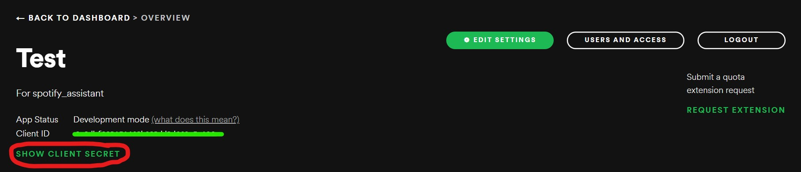

In this project, we aim to create a package in R that builds on top of the spotifyR package and offers more useful features to improve the Spotify user experience.
This is achieved by utilizing REST APIs to implement the functions. Although the spotifyR package consists of wrapper functions for the Spotify REST APIs, our package will combine multiple requests from the spotifyR package to provide additional insights for Spotify users.
Authors
- Caroline Tang
- Chester Wang
- Jenit Jain
- Julie Song
This package was originally created as part of the requirements of DSCI524 (Collaborative Software Development), a course in the Master of Data Science program at the University of British Columbia. All original members of this project abided by the Code of Conduct.
Installation
You can install the development version of SpotifyAssistantR like so:
devtools::install_github('UBC-MDS/SpotifyAssistantR')Environment Setup
Using this package requires Spotify and Spotify Developer accounts, which you can create on the Spotify Developer website. After creating an account, you will need to create an app to obtain the necessary client ID and secret in order to authenticate into the Spotify API.
Creating an app in the Spotify Developer Dashboard
After giving your app a name and description, you should be able to obtain the client ID and secret from the top of the app overview:
 After clicking SHOW CLIENT SECRET:
Client ID and secret location
To use the package we require you to supplement the client ID and client secret as environment variables:
Sys.setenv(SPOTIFY_CLIENT_ID = 'xxxxxxxxxxxxxxxxxxxxx')
Sys.setenv(SPOTIFY_CLIENT_SECRET = 'xxxxxxxxxxxxxxxxxxxxx')
access_token <- spotifyr::get_spotify_access_token()
authentication_code <- spotifyr::get_spotify_authentication_code()This must be provided after loading the spotifyr library and before using the package.
Running spotifyr::get_spotify_authentication_code() should open a new browser tab that asks for permission for the app to access your information. If successful, you should get a message that you can close the tab and return to R.
If this is not the case, you may need to add http://localhost:1410/ as a redirect URI in the app, by clicking Edit Settings in the app overview and pasting the URI under Redirect URIs. Alternatively, you may need to rotate the client secret and re-assign SPOTIFY_CLIENT_SECRET.
Usage
This is a basic example which shows you how to get the new releases in Asia:
library(SpotifyAssistantR)
Sys.setenv(SPOTIFY_CLIENT_ID = 'xxxxxxxxxxxxxxxxxxxxx')
Sys.setenv(SPOTIFY_CLIENT_SECRET = 'xxxxxxxxxxxxxxxxxxxxx')
get_new_releases_by_continent(country_code='Asia', n_limit=3)
# [[1]]
# [1] "Renegade"
#
# [[2]]
# [1] "LANDER"
#
# [[3]]
# [1] "Dreaming of You"
# Get a new playlist on your Spotify account filled with recommended songs based on your top artists:
get_song_recommendations()
# [1] "Generating recommended songs based on artists ..."
# [1] "Here is a link to the new playlist: https://open.spotify.com/playlist/2CB2JEtHcraGS0GeEkzEUW"
# This is a simple example to get song titles from some of your saved playlists:
# for one playlist
get_playlists_songs(playlist_names='bops')
# [1] "Getting songs for bops"
# $bops
# [1] "hot girl bummer"
# [2] "Salt"
# [3] "Don't Start Now"
# for more than one playlist
get_playlists_songs(playlist_names=c('bops', 'night drives'))
# [1] "Getting songs for night drives"
# [1] "Getting songs for bops"
# $`night drives`
# [1] "Sunset (2019 Y.Nakamura Remastering)"
# [2] "Plastic Love"
# $bops
# [1] "hot girl bummer"
# [2] "Salt"
# [3] "Don't Start Now"